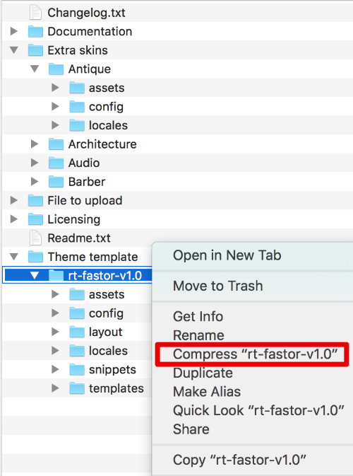
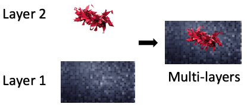
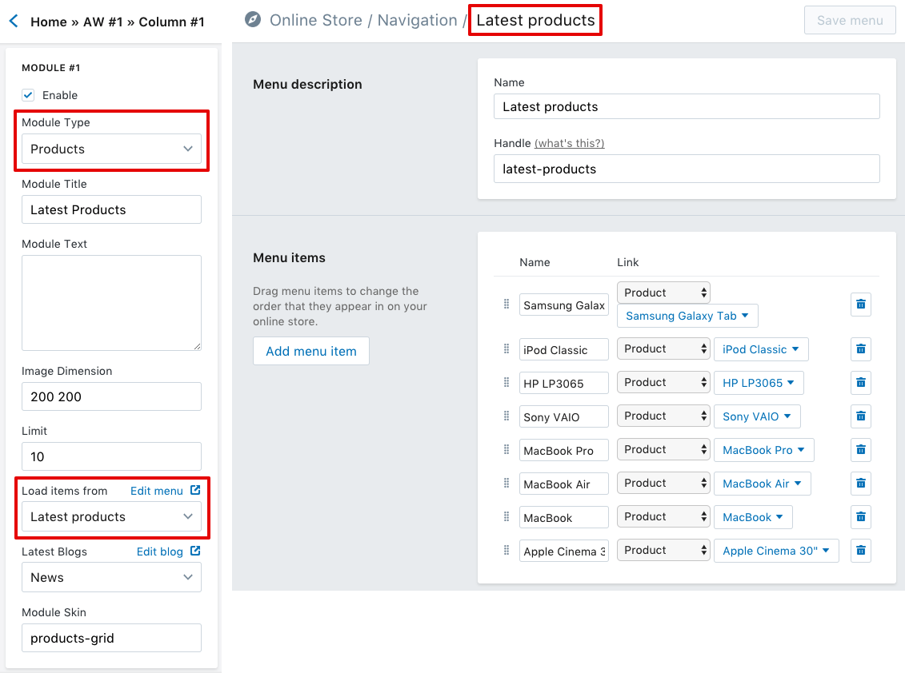
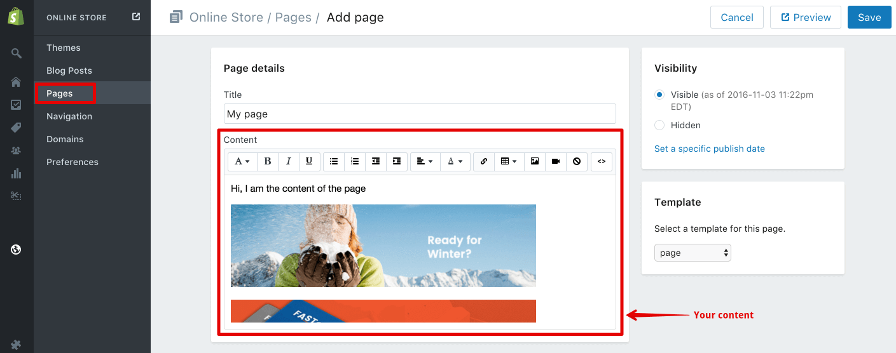
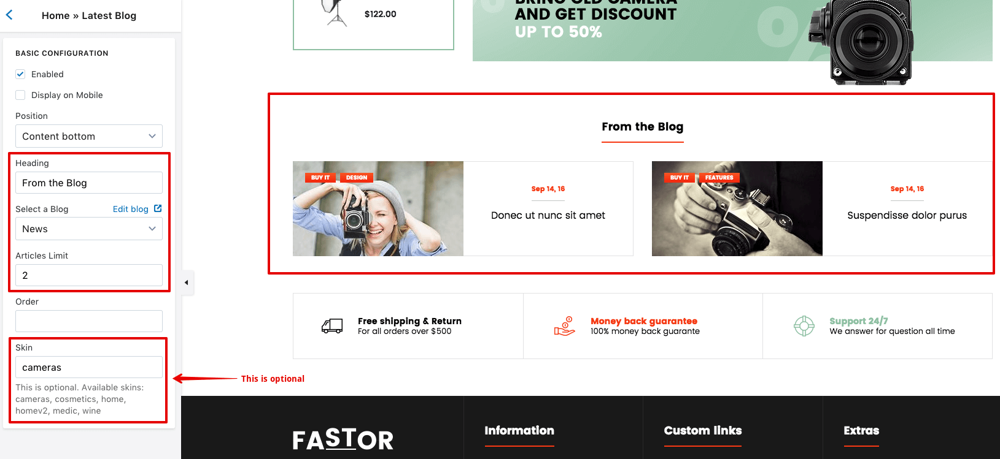
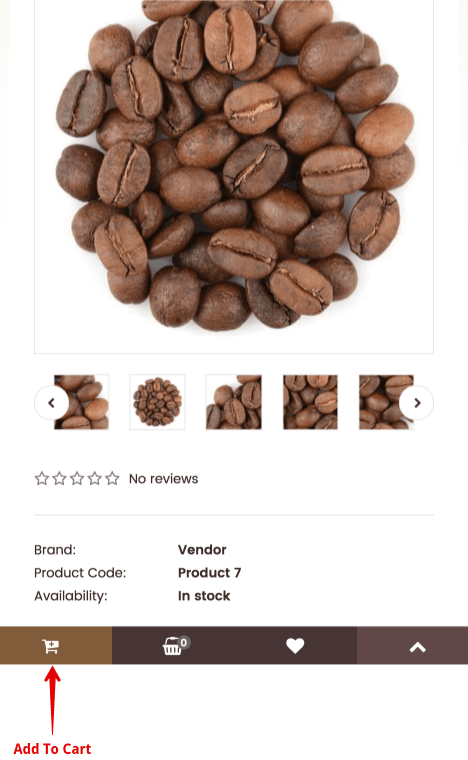

Fastor - Responsive Shopify Theme
Documentation 1.3
- Demo: http://demo.roartheme.com/shopify/fastor/
- Latest Document: http://docs.roartheme.com/shopify/fastor/
- Created: October 3, 2016
- Latest Update: January 03, 2017
- By: RoarTheme
Thank you for purchasing!
Fastor is the most powerful Shopify theme with tons of options. Included many modules allows you to create store without additional costs. Demo content is perfect solution to have store ready in just few clicks. Our best Shopify theme ever!
This theme is designed to use with Shopify only.
This documentation is made with Documenter
Theme File
If you purchased our theme from Themeforest. You can download the theme anytime from Themeforest > Your Account > Downloads.
Navigate through your purchased items and find Fastor. Theme File is always in ZIP format. Unzip it and here's the list of what's included:
- File to upload - Contains Installable Default Skin (.zip). The valid file to upload to your Shopify store via Admin Panel should be here.
- Theme template - This is the unzipped version of the default skin, only for additional skin installation purpose.
- Extra skins - Contains 56 Additional Theme Skins.
- Documentation - Contains theme documentation file.
- Licensing - Contains all licensing info files.
- Changelog (.txt) - Includes all theme versions changelog info.
- Readme (.txt)
Theme Support
Many support queries and technical questions will already be answered in this documentation, so please read this item first. You can also find other tips/tricks in our articles. If you can’t find the answer you’re looking for, please:
- Check Fastor document in online version at http://docs.roartheme.com/shopify/fastor. This is always the latest document
- Submit a ticket to https://roartheme.ticksy.com
- Email us via support@roartheme.com
Why does this theme come with some HTML settings?
I am not a tech geek and I don't know HTML, what should I do?
Fastor includes many essential widgets, and partially, HTML settings make the theme flexible and it is very easy to custom. This can help saving your time & money in the future in case you need some changes.
You don't have to worry about HTML because we made a tool called RoarTheme HTML Editor. It help you to edit any HTML code, very easy and intuitive.
And, if there are any queries, please feel free to ask via our Ticket System or live chat with us via Skype ID roartheme. Just tell us which demo and which section do you like, we insure that we will help you until things are done
Support period
A supported item includes item support for 6 months from the purchase date. During those 6 months, we are expected to be available to provide the item support services. Response times can vary depending on the volume of inquiries, the nature of the request, and whether questions have already been answered or support has already been provided.
You’ll also have the option to purchase extended item support, increasing the item support period up to a maximum of 12 months from the date of purchase.
What's included
- Responding to questions or problems regarding the item and its features
- Fixing bugs and reported issues
- Providing updates to ensure compatibility with new software versions
What's NOT included
- Item customization
- Setting up your store
- The theme is customized without our permission
- Support for third party customs/software/plug-ins
- Teaching you HTML & CSS etc.
- Item customization
- Setting up your store
- The theme is customized without our permission
- Support for third party customs/software/plug-ins
- Teaching you HTML & CSS etc.
Please choose a category you want:
Common support categories
- Installation & Skins
- Layout
- Logo & Favicon
- Font
- Color
- Background
- Header
- Slider
- Positions
- Home Page
- Mega Menu
- Footer
- Product Filter
- Advanced Widget
- Mobile Toolbar
- Lookbook
- Product Reviews
- Today Deal's
- HTML Editor
Other support categories
Video Documentation
Video Documentation
(Please check our Video Channel for latest videos)
Installation
(!!!)IMPORTANT: To start the installation, you MUST unzip the Theme File beforehand.
To install the default skin
- From your Shopify admin, click Online Store, and then click Themes
- Click Upload A Theme in the top right-hand corner
- From the Upload A Theme dialog, click Choose File to select the only .zip file in the File to upload folder (mentioned above)
- Click Upload
To publish the theme on your storefront immediately, click Publish theme
To install an additional skin
- Go to Theme template » rt-fastor-v1.0 folder then remove 3 folders: assets, config and locales
-
Go to Extra skins folder and navigate to the folder containing the skin you wish (for example, I choose skin Antique) and copy all 3 folders here to rt-fastor-v1.0
-
If you are using a MAC, right click on rt-fastor-v1.0 then select Compress "rt-fastor-v1.0"
If you are using Windows, right click on rt-fastor-v1.0 then select Send to » Compressed (zipped) folder
-
A new zip file named "rt-fastor-v1.0.zip" will be created within Theme template folder
- From your Shopify admin, click Online Store, and then click Themes
- Click Upload A Theme in the top right-hand corner
- From the Upload A Theme dialog, click Choose File to select the rt-fastor-v1.0.zip file in the Theme template folder
- Click Upload
To publish the theme on your storefront immediately, click Publish theme
How to change some common Texts?
This theme supports Theme Internationalization, so you can easily change almost the texts by going to Edit Language:
Layout
Customize theme >Layout
This setting allows you:
-
Set the Page Width, Spacing Between Columns, Page Direction
(i) This theme supports RTL layout. To activate it, please select RTL (Right To Left) in Page Direction section
-
Set the width container of common sections in your site

Example of layout sections:
Logo & Favicon
Customize theme >Logo and Favicon
This setting allows you:
-
Set logo for the store, as well as its width in pixels
(!) This theme supports logo in image only
-
Set the favicon. You can even specify for each device type, and this is optional
Font
General
Customize theme >Font
Fastor supports Goolge Fonts. Here you can specify the fonts you want to use simply by typing their names
Please note that the font name must be match exactly, one by one character, even space character and case-sensitive, with the name you see on Google Font Site
(!) In common, Heading Font is used for title, navigation, heading ; whilst General Font is used in anywhere else such as body, paragraph
(!) Special Font is used only in some skins in few areas, so you can leave it blank
How about fonts in specific sections?
This theme allows you to customize the font style (font weight, line height, font size, text transform) for various sections throught your store. Let's take a look on 2 examples - font settings for Body section and Footer section:
(!) The number of options can be different to each section. For example, in Body section there are 6 options, but in Footer there are 3 only
Here's the full list of sections you can set the font style:
-
Body
Customize theme >Font » Body
-
Button
Customize theme >Font » Button
-
Heading
Customize theme >Font » Heading
-
Page name
Customize theme >Font » Page Name
-
Menu bar
Customize theme >Font » Menu bar
-
Submenu heading
Customize theme >Font » Submenu heading
-
Categories box heading
Customize theme >Font » Categories box heading
-
Categories box links
Customize theme >Font » Categories box links
-
Price
Customize theme >Font » Price
-
Sale/new label
Customize theme >Font » Sale/new label
-
Footer
Customize theme >Font » Footer
-
Footer heading
Customize theme >Font » Footer » Heading
Color
As well as the Font settings, this theme also allows you to customize the Color for various sections throught your store. This is an example - Color settings for Primary Button:
As you can see here, the color text is set as white
-
The border is a type of unset value
So what will happen here? When you leave an color option unset, the theme automatically takes the default value. You can check https://rt-fastor.myshopify.com/ to see how the theme looks when all settings, including colors, are default
-
This theme supports gradient color. The button on the right results from the last 2 options
(!) The number of color options can be different to each section.
Here's the full list of sections you can set the color:
-
Body
Customize theme >Color » Body
-
Header
Customize theme >Color » Header
This is an example of header (from Holidays demo):

-
Top Bar
Customize theme >Color » Header » Top Bar
This is an example of Top Bar:
-
Top
Customize theme >Color » Header » Top
This is an example of Top:
-
Menu
Customize theme >Color » Header » Menu
This is an example of Menu:
-
Slider
Customize theme >Color » Slider
-
Main Content
Customize theme >Color » Main Content
-
Primary Button
Customize theme >Color » Primary Button
-
Secondary Button
Customize theme >Color » Secondary Button
-
Input
Customize theme >Color » Input
-
Select
Customize theme >Color » Select
-
Tab
Customize theme >Color » Tab
-
Breadcrumb
Customize theme >Color » Breadcrumb
-
Box
Customize theme >Color » Box
-
Box on the Left/Right column
Customize theme >Color » Box on the Left/Right column
-
Box Categories
Customize theme >Color » Box Categories
-
Box with Products
Customize theme >Color » Box with Products
-
Categories Wall
Customize theme >Color » Categories Wall
-
Product
Customize theme >Color » Product
-
Product Button
Customize theme >Color » Product » Button
-
Sale badge
Customize theme >Color » Sale badge
-
New badge
Customize theme >Color » New badge
-
Preface Footer
Customize theme >Color » Preface Footer
-
Footer
Customize theme >Color » Main Footer
-
Footer Button
Customize theme >Color » Main Footer » Button
-
Footer Social
Customize theme >Color » Main Footer » Social
-
Blog
Customize theme >Color » Blog
-
Testimonials
Customize theme >Color » Testimonials
-
Mobile Toolbar
Customize theme >Color » Mobile Toolbar
For more info, please refer Mobile Toolbar section
Background
Not only Color, Fastor allows you to set the Background Image for common sections. Here's an example of Background Image setting:
The Bground option can be None, Custom or Default (this option is available in some sections only).
- Select Custom then pick an image to set the background
- Select None to turn off the background image
- Select Default to leave the background as the default. You can check https://rt-fastor.myshopify.com/ to see how the theme looks when all settings, including background image, are default
The Position option sets the starting position of the background image
The Repeat option sets if/how the background image will be repeated. The value repeat-x and repeat-y represent the background-image is repeated vertically and horizontally respectively
The Attachment option sets whether the background image is fixed or scrolls with the rest of the page.
Look at the screenshot above, you can see Layer 1, Layer 2,... This is called "multiple layers" background:
Multiple layers background is available in Body Background settings only. There is no multiple layers in other sections
If a section is set both background color and background image, the image is always the top priority, color goes after
Here's the full list of sections you can set the background image:
-
Body
Customize theme >Bground » Body
-
Header
Customize theme >Bground » Header
-
Top Bar
Customize theme >Bground » Header » Top Bar
-
Top
Customize theme >Bground » Header » Top
-
Menu
Customize theme >Bground » Header » Menu
-
Slideshow
Customize theme >Bground » Slideshow
-
Preface Footer
Customize theme >Bground » Preface Footer
-
Footer
Customize theme >Bground » Footer
-
Categories Heading
Customize theme >Bground » Categories Heading
-
Sale Label
Customize theme >Bground » Sale Label
-
New Label
Customize theme >Bground » New Label
-
Primary Button
Customize theme >Bground » Primary Button
-
Secondary Button
Customize theme >Bground » Secondary Button
Header
General
Customize theme >Header
The first 2 options make vertical menu (on header) visible always in home page and collection respectively. By default, a vertical menu is displayed its heading only. its items are visible only when hovering.
Fastor also supports Fixed (sticky) Header, which makes header always visible even when users scroll down the page. The option allows you to set sticky for overall header or only the menu.
Here you can also upload your cart icons (both normal & hover states) via Cart Block settings
Header Types
Fastor comes with 27 header types:
Header 01
Header 02
Header 03
Header 04
Header 05
Header 06
Header 07
Header 08

Header 09
Header 10
Header 11
Header 12
Header 13

Header 14
Header 15
Header 16
Header 17

Header 18

Header 19
Header 20
Header 21
Header 22
Header 23
Header 24
Header 25
Header 26
Header 27
Top Promotion
Customize theme >Header » Top Promo
Please take a look on demo Stationery. This is the top promotion and its components:
Currencies Switcher
Customize theme >Header » Currencies Switcher
This setting allows you to put a currencies selector on your store front. You can specify the currencies you want by typing the currecy codes into "Currencies you wish to support" with space between them
In almost header styles, the main menu is put in. For more info about the menu and how to set it up, please go to Mega Menu section
Home Page
Positions
Customize theme >Home » Positions
Fastor supports positions in home page, the ordering & placement of every single widget can be configured in theme settings, so you can create your own home page easily without touching the source code. Here's the sketch of all 12 supported positions in home page:
All of 12 positions are visible in home page only, except Top Block, Menu and Menu2 (These 3 positions are special cases: belonging to Header, they are visible in all pages)
Every position can be turned on/off by going to the setting path given above:
When a position is off, all of widgets within it will be disabled whatever you turn them on or off
Only widget with "Position" option can be put in these positions.
If there are two widgets (or more) put in a position, the ordering of a widget will be judged based on its "Order" option. This is an example:
Supported Widgets
Here's the full list of widgets that support position:
Except Mega Menu, other widgets are displayed in home page only
Home Slider
Customize theme >Home » Slider
Images Dimension
For the best result, please use the same dimension for all images in slider. We recommend at least 1400-pixels-width images in .PNG format
General Settings
There are 2 options to set the position and the ordering for the slider
Placement option determines if the slider fits its layout or having a container covered (padding on the left and right)
Overflow mode makes the slider a little bit overflowing on the left and right. This mode requires the slider with full-width layout (please check the Layout section for more info) and "within-container" placement. You can check demo Flowers or demo Toys2 for example
The Interval value is the time (in milliseconds) that the active slide stands still. This value is valid only when Auto slideshow is on
Design & Mask Settings
The Align to top option brings the slider behind the header. Please check demo Fashion3 for example.
Here you can also specify a margin top value for your slider
Scale image option will scale down the image dimension on mobile.
The height of the slider can be set manually, just type a value (in pixels). If you are not sure about this, just select the Auto height
Sometimes the text on slider can be match with the image, especially when they have the same color range. To avoid this and to make the text stand out, you can turn on slider Mask. It is a layer with custom color and opacity standing behind the text but in front of the image
Absolute Background
This is a background put behind the slider. It is fixed on the right and is overflowing to the left. Please check the demo Barber for example. The picture with a man at the top-left is an absolute background
(!) When this background is on, all images in slider will be transparent on large screens. On mobile, the background is hidden and images are back
Animation
Fastor support animation when the slider content appears/disappers. You can specify the animations you want for Heading, Caption, Call To Action, Sticker(?) separately by typing animation name in Appear Animation and Disappear Animation sections
List of animations:
- Appear Animations: bounce, bounceIn, bounceInDown, bounceInLeft, bounceInRight, bounceInUp, fadeIn, fadeInDown, fadeInDownBig, fadeInLeft, fadeInLeftBig, fadeInRight, fadeInRightBig, fadeInUp, fadeInUpBig, flash, flipInX, flipInY, headShake, jello, lightSpeedIn, pulse, rotateIn, rotateInDownLeft, rotateInDownRight, rotateInUpLeft, rotateInUpRight, rollIn, rubberBand, shake, slideInDown, slideInLeft, slideInRight, slideInUp, swing, tada, wobble, zoomIn, zoomInDown, zoomInLeft, zoomInRight, zoomInUp
- Disappear Animations: bounceOut, bounceOutDown, bounceOutLeft, bounceOutRight, bounceOutUp, fadeOut, fadeOutDown, fadeOutDownBig, fadeOutLeft, fadeOutLeftBig, fadeOutRight, fadeOutRightBig, fadeOutUp, fadeOutUpBig, flipOutX, flipOutY, hinge, lightSpeedOut, rotateOut, rotateOutDownLeft, rotateOutDownRight, rotateOutUpLeft, rotateOutUpRight, rollOut, slideOutDown, slideOutLeft, slideOutRight, slideOutUp, zoomOut, zoomOutDown, zoomOutLeft, zoomOutRight, zoomOutUp
Please visit this demo to see how these animations work
When typing animation name, please make sure the name is correct to the list given above
Individual Slide Settings
Customize theme >Home » Slider » Slide [1-3]
Content Settings
Here you can set the content and image for the slide
If Use Image option is off, the slide image will be transparent.
This theme also supports video (only .MP4 format) in slider. Just paste your video direct link into Video URL
Design Settings
You can customize slide content here, including font size, color, decoration, position between Heading, Caption and CTA
Position Settings
These settings help you determine the margin of slide content as you want. You can use both pixels and percent for margin values. For example: 100px, 20%, 350px are valid values
Sticker Settings
Sometimes, text has limitation. It is very hard to express something artistic just by using text only. Fastor allows you to use image instead of text. This is called sticker. Just upload an .PNG image, it will replace your text. You can check demo Games for example of using sticker in slider
Advanced Widget
Customize theme >Home » Advanced Widget [1-5]
What is Advanced Widget?
Advanced Widget is a type of grid content:
It supports up to 5 columns, and each column supports up to 2 modules. The number of columns and modules used can be adjusted. Your content will be put into the modules
Here's the settings of an Advanced Widget:
The Layout Settings is where you can set the status, display and postion for your Advanced Widget.
The Design Settings allows you to change the look of your Advanced Widget:
- Custom Class is optional. You can use it to add a custom class into html structure. If you don't know html, just leave it blank
- Margins and Paddings are where you can set the margin and padding for your widget. For example, if you want to set margins having 10 pixels at top, 15 pixels on right, 20 pixels at bottom & 30 pixels on left, just type 10-15-20-30. You can also use 'n' character to represent for negative number. For example, 10-15-n20-30 of paddings value says that the padding bottom is -20 pixels
- Here you can also choose a Background Image for your widget
- The Position option sets the starting position of the background image.
Must strictly type either 50% 0 or with format X Y in there X is one of top, bottom and Y is one of left, center, right - The Repeat option sets if/how the background image will be repeated. The value repeat-x and repeat-y represent the background-image is repeated vertically and horizontally respectively.
Must strictly type one of no-repeat, repeat-x, repeat-y, repeat - The Attachment option sets whether the background image is fixed or scrolls with the rest of the page.
Must strictly type either scroll or fixed
For each module, the content type can be one of these: HTML, Box, Links, Products, Products Tabs, Newsletter, Latest Blog

The Module Title is the title of the module. It will be disabled if HTML type is used
The Module Text can be text/HTML/description depending on Module Type:
- If HTML type is used, it will be the HTML
- If Box type is used, it will be the content
- If Newsletter type is used, it will be the description
- Other types, it will be disabled
The Image Dimension is only for Products, Products Tabs or Latest Blogs type. It is used for specifying the width & height in pixels of images.
For example, if you want all images in your module to be 200 pixels in width & 200 pixels in height, please type 200 200
The Latest Blogs is only for Latest Blogs type. Here please choose the blog you want to show.
The Load Items From is only for Links, Products, Products Tabs type.
For example, if you want to display a list of links, you can use Advanced Widget using Links:
- First, please create a menu (via Navigation section in Admin) with some items you want
- Then, please select the menu you just created in Load Items From
- If you use Products type, please create a menu, each item of the menu has to link to a Product, representing for a product
- If you use Products Tabs type, please create a menu, each item of the menu has to link to a Collection, representing for a tab
- After that, please select the menu you just created in Load Items From
The Module Skin is an optional field. However, it decides how your module looks. For the full list of supported skins, please go to Module Skins section.
An example of Advanced Widget
This is an Advanced Widget with 2 columns, each column has only 1 module
An Advanced Widget always has 12 units in width, and it divides into the columns. Here the width of column 1 is 8 and the column 2 has 4 of width.
Here's the width settings of column 1 and column 2 respectively:
In case you have only one column in your Advanced Grid, the width of the column should be 12.
Let's take a look into modules of each column:
-
Column 1: the only module uses Products type

You need to create a menu (via Navigation section in Admin) first -
Column 2: the only module also uses Products type
You need to create a menu (via Navigation section in Admin) first
Module Skins
You can specify the look of a module using skin, simply by typing the skin name into Module Skin field. Each module type has a certain skins.
Please note that the skin name is very strict so please remember that, when using skin, type its name correctly.
- For LINKS type: cars, brands
- For PRODUCTS type: antique, architecture, carparts2, computer4, computer6-today-deals, computer8-today-deals, fashion2, furniture-grid, games-blue, games-green, games-grey, games-orange, games-pink, holidays, medic-last-in-stock, petshop2-today-deals, products-grid, products-grid-flowers, products-grid-flowers-one-product, products-grid-sportwinter, products-grid-carousel, shoes3-today-deals, sport, today-deals, toys2-today-deals, toys3
- For PRODUCTS TABS type: vertical
- For NEWSLETTER type: architecture, audio, bakery, books, carparts, ceramica, computer3, computer8, cosmetics2, cosmetics, exclusive, fashion2, fashion3, furniture, gardentools, glamshop, lingerie, market, matrialarts, medic, military, naturalcosmetics, perfume, shoes3, spices, sport, sportwinter, toys3, wine
- Skin is not supported in other types
Products Tab
Customize theme >Home » Products Tab [1-5]
What is Products Tab?
This widget allows you to put products in your homepage, you can arrange them in tabs if you want.
If you are looking for a way to create something such as Latest Products, Featured Products, Best Sellers, My Collections, etc... this widget is right for you.
Example of a Products Tab
Here's example of a Products Tab:
First, we need to create 4 collections:
Then, please create a menu (via Navigation in Admin) with 4 items, each item has to link to each collection you created:
The number of items decides the number of tabs of the widget. If you have only one item, the widget will be a single tab.
Finally, go to Products Tab settings and select the menu you just created:
- Here you can set position and order for your widget
- The max items, max rows and limit per row are active only when Carousel is used
Custom Widget
Customize theme >Home » Custom Widget [1-5]
What is Custom Widget?
It allows you to put a Page content or even HTML code you want into your store without touching the source code. If you know HTML, this is really a great one, because you can design your own content easily.
You have 2 ways to set the widget content:
An example of Custom Widget using Page:
An example of Custom Widget using HTML:
Setting up a Custom Widget using Page
First, go to Pages section in Admin and create a Page as you want:
Then, go to a Custom Widget settings, set Content Type as Page, set your Heading and select the Page you just created
For the postion and order, please refer Homepage Positions
Setting up a Custom Widget using HTML
Just go to a Custom Widget settings, set Content Type as HTML, and your HTML code.
To edit HTML content, please refer RoarTheme HTML Editor
For the postion and order, please refer Homepage Positions
Testimonials
Customize theme >Home » Testimonials
This theme includes a Testimonials Widget, allows you to put it anywhere in your Homepage:
You can set the Heading, position & order for the widget:
This widget contains 3 testimonial items. For each one's content, you can set manually or choose from a Page
Setting up Testimonial Item manually
Go to the item, set the Content Type as Testimonial and fill the content below
Setting up Testimonial Item using a Page
First, please go to Pages section in Admin and create a Page
Go to the item, set the Content Type as Page and select the page you just created
Latest Blog
Customize theme >Home » Latest Blog
You can display your articles in Homepage with this widget. Just set the Heading the select your blog, that's all
You can specify the look of this widget by using skin, simply by typing the skin name into Skin field. This is optional, you can leave blank.
List of supported skins: cameras, cosmetics, home, homev2, medic, wine
Please note that the skin name is very strict so please remember to type the skin name correctly.
Product Filter
Customize theme >Collection » Filtering

Fastor supports up to 10 filter items. In this example, there are 3 filter items activated
Values of each filter item must be separated by comma
To match your product with a value, just add the value to the product tags:
(!) Because of the limitation of Shopify technique, the Product Filtering is the same to all collections in your store. If you want an advanced filtering, you have to use 3rd party apps
Wishlist
This theme comes with a simple wishlist feature. To enable it, please follow the instruction:
-
Create a collection containing ALL of your products and change its handle to "all" by scrolling down the create page and click Edit Website SEO
-
Create a page and set template as page.wishlist
-
Go to the settings below and select the page you created:
Customize theme >Wishlist
Other Settings
(This section is still in updating process because of some latest Shopify updates. In the meantime, please feel free to ask us via our Ticket System or chat with us via Skype ID roartheme. We are always willing to help, to guide, or anything else you want)
Product Reviews
To use the built-in Product Reviews feature in this theme, first you need to install a free Shopify App called Product Reviews, and you can get it at https://apps.shopify.com/product-reviews
Advanced Settings
(This section is in updating process because of some latest Shopify updates. In the meantime, please feel free to ask us via our Ticket System or chat with us via Skype ID roartheme. We are always willing to help, to guide, or anything else you want)
RoarTheme HTML Editor
When working with theme settings, you may see HTML code in some sections, like this:
The question is, how can I edit this type of content to meet my demand while I do NOT know HTML?
You can use our tool at http://demo.roartheme.com/shopify/others/html_editor to edit any HTML content in this theme. This link also contains a tutorial video showing you how to use.
Mobile Toolbar
To enhance user experience on mobile, we introduce Mobile Toolbar, which helps users to quickly access the function they need based on the current page
This toolbar is visible always at the bottom of the mobile screen. Its content is flexible based on the page you are in. The screenshots below are in Homepage, Collection Page & Product Page respectively:
Homepage:
Collection Page:
Product Page:

You can change the color of this toolbar by go to Color » Mobile Toolbar in theme settings
Lookbook
This theme allows you to put your own Lookbook on Homepage or a Lookbook Page. See the 2 example belows:
- Homepage Lookbook: https://rt-fastor-fashion4.myshopify.com
- Lookbook Page: https://rt-fastor-fashion4.myshopify.com/pages/lookbook
To create a Lookbook, please:
Go to RoarTheme Lookbook Creator and follow the instruction there to get the HTML code
To put the lookbook on Homepage, please use a Custom Widget and paste the code into the HTML Content
To put the lookbook into a Page, please create a Page, at the page content section click <> button to switch to HTML mode and paste the code
Product Video
An example of Product Video
You can put a video (YouTube, Vimeo...) into the product page under a tab, like this:
The feature is working only when the video provider supports embed code using iframe
Setting up Product Video
-
Go to your video and copy the embed code. For example, to a YouTube video, click Share then click Embed
For other video providers, surely there is also a place to get the code. Please note that the code should begin with <iframe...
-
Go to your product in admin, on the featured image, click to edit the alt text and paste the embed code